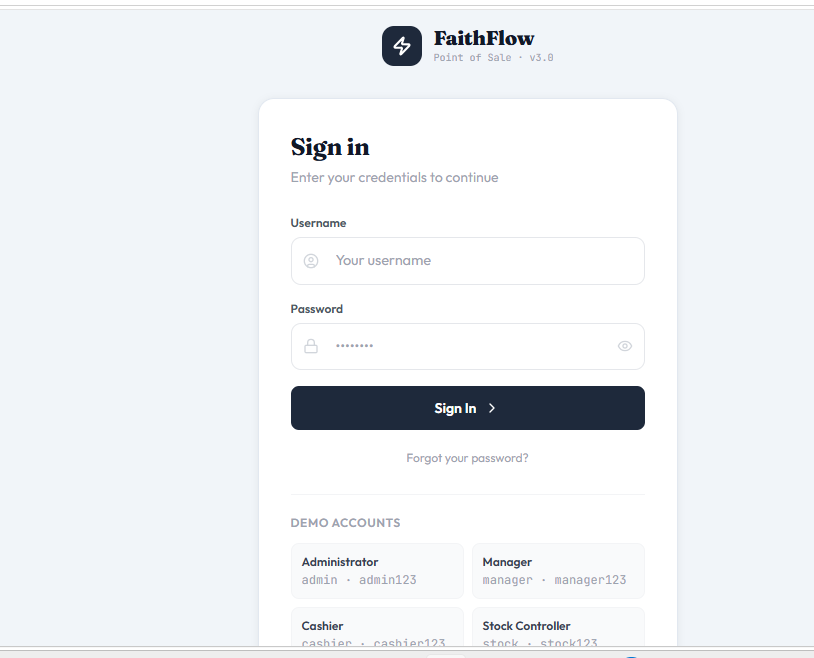

Full Stack · Web App · Solo build
FaithFlow — Point of Sale & Inventory System
The problem
A retail store needs sales, stock, expenses and reporting in one place, but different staff should only see and do what their job requires, from the cashier at the till to the manager reviewing reports.
My role
I designed and developed the whole system myself, from concept to deployment: the database, the REST API, the React front end, authentication and hosting.
Key design decisions
- Role-based access with JWT. Four roles (Admin, Manager, Cashier, Stock Controller) are carried in a signed token, and every protected API route checks the role, so permissions are enforced on the server, not just hidden in the UI.
- Separate front end and API. The React app and Express API are deployed independently (Vercel and Railway), so each can be updated and scaled on its own.
- SQLite via better-sqlite3. A lightweight, file-based database that keeps the backend simple to set up and run.
- Dashboards with Recharts. Managers get sales and stock insight visually instead of reading raw tables.
What it does
Barcode scanning
Inventory & stock
Purchase orders
Customer loyalty
Product image upload
CSV import
Expense tracking
Sales reporting

Architecture
React 18 + ViteTailwind · Recharts · hosted on Vercel
HTTPS · JSON · Bearer JWT
Express REST APIAuth + role middleware · hosted on Railway
better-sqlite3
SQLiteProducts · sales · users · expenses
Demo accounts for every role are listed on the sign-in screen.